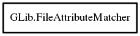

FileAttributeMatcher
Object Hierarchy:

Description:
[ Compact ]
public class FileAttributeMatcher
Determines if a string matches a file attribute.
Content:
Creation methods:
Methods:
- public bool enumerate_namespace (string ns)
Checks if the matcher will match all of the keys in a given namespace.
- public unowned string enumerate_next ()
Gets the next matched attribute from a
FileAttributeMatcher.
- public bool matches (string attribute)
Checks if an attribute will be matched by an attribute matcher.
- public bool matches_only (string attribute)
Checks if a attribute matcher only matches a given attribute.
- public FileAttributeMatcher @ref ()
References a file attribute matcher.
- public FileAttributeMatcher subtract (FileAttributeMatcher subtract)
Subtracts all attributes of subtract from
this and returns a matcher that supports those attributes.
- public string to_string ()
Prints what the matcher is matching against.
- public void unref ()
Unreferences this.